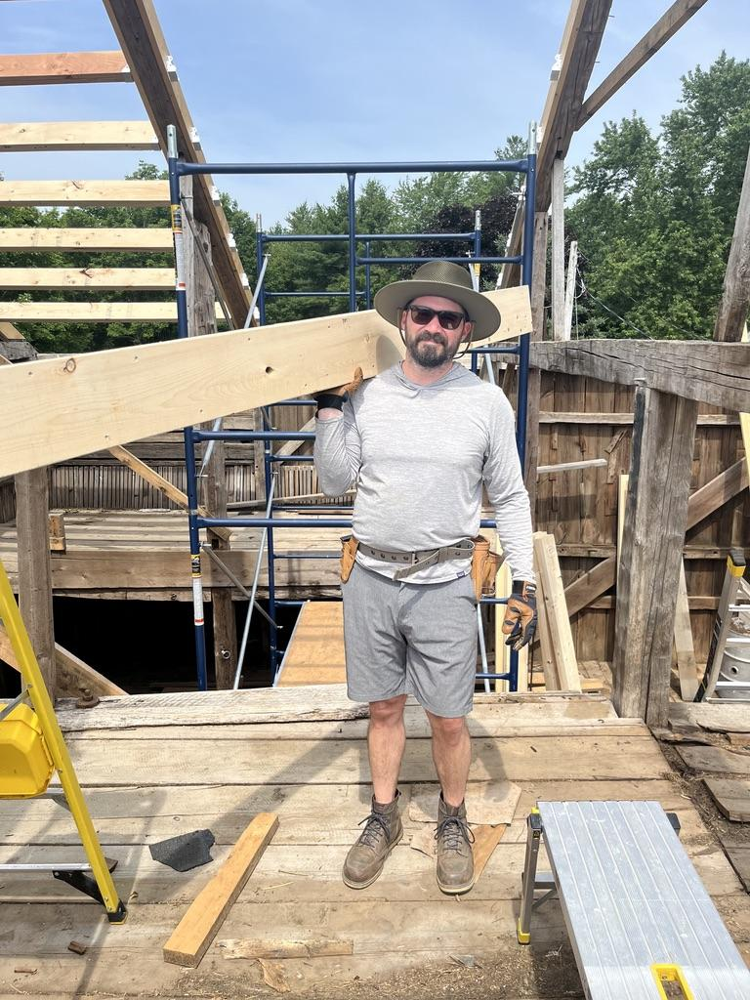
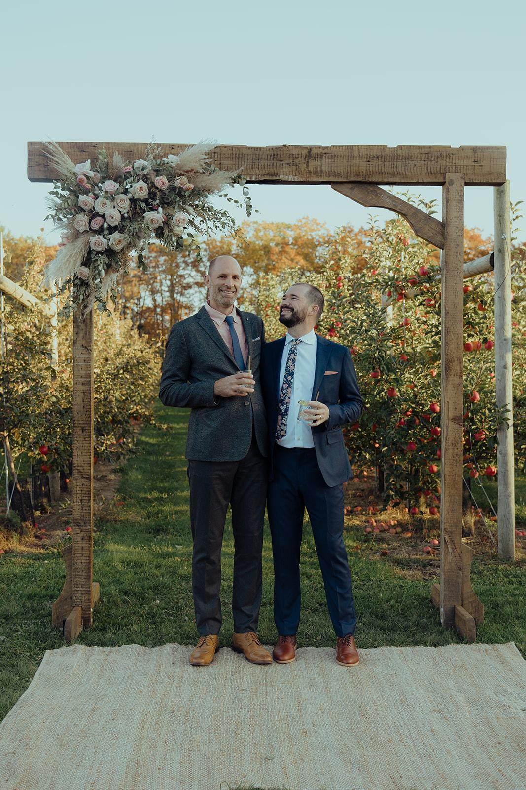
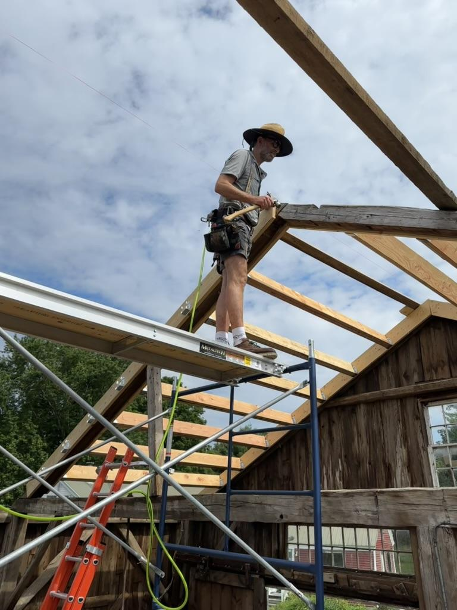
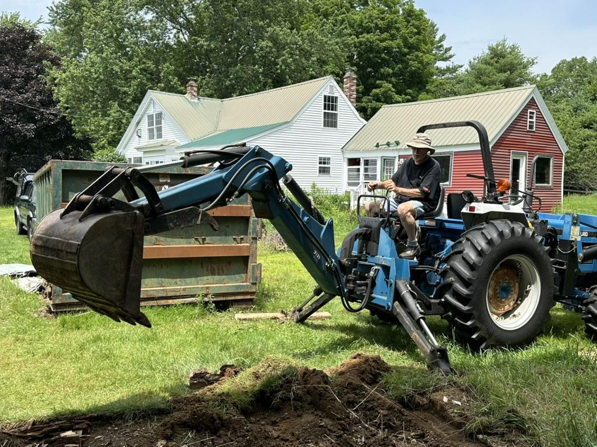

Our Story
South Road Farm didn't start as a wedding venue. It started as a marriage, a piece of Maine land in need of serious work, and a brother-in-law with a truck full of tools. This is that story.

2022
Nick got married at a barn venue in the summer of 2022. Something about it stayed with him — not just the day, but the setting itself. The way a farm holds a celebration differently. The light through old timber. The feeling that the land was already doing something no amount of decor could replicate.
When South Road Farm came up a short time later — sixty acres, two barns, a farmhouse, and a lot that needed attention — he recognized something in it. Not what it was at that moment, but what it had been. And what it could become again.

The Arch
Nick's brother-in-law Dave is a lifelong carpenter. For Nick's wedding, Dave built the wooden ceremony arch himself — not commissioned, just made, as a gift. That arch now stands on the ceremony lawn at South Road Farm.
It went up before the barns were finished, before the deck was rebuilt, before most of what you see now existed. The arch that opened one chapter became the first thing built for this one.

The Restoration
In the years since, Dave has put this property back together piece by piece. Both barns. The farmhouse. Every deck, every threshold, every beam that needed attention. Largely himself, by hand — the kind of work that takes years and can't be faked when it's done.
Midway through, a storm took the entire roof off one of the barns. Not the shingles — the roof. All of the timber framing, the beams. The whole structure came off in the wind. They looked at what was left, figured out what needed to happen, and rebuilt.

The Community
The years of work brought something else alongside the labor. A neighbor with a tractor who showed up season after season — moving material, clearing land, putting in time the way people do when they actually care about a place.
Another neighbor — one who had grown up on this property, long before Nick arrived — appeared at the door one morning when the basement flooded. She had a generator and a pump in her truck. Nobody called her. She just came.
The Land
Joseph Watson settled this hundred acres on July 4, 1793. He built the first dwelling. The post-and-beam framing that still stands in the barn went up in the early 1800s. The granite foundation was hauled by oxen and cart from quarries in Jay, Maine.
In the early 1900s, the Harris family worked the land — raising cattle, keeping oxen, making hard cider from the apple orchard. The old blacksmith's shop still stands. Electricity arrived in 1948.
The farm ran continuously from the late 1700s until 2018 — longer than Maine has been a state. The deed records go back to April 1791. A former neighbor is currently writing a historical novel set on this land.
Why It Matters
The barn has a character that wasn't designed — it accumulated. The post-and-beam framing is from the early 1800s. The wagon wheels against the wall came with the property. The arch on the ceremony lawn was built for one specific wedding and stayed.
When you walk through South Road Farm, you're walking through something that has been tended to by a lot of different people, over a very long time. That's what this place offers that can't be manufactured: it was made over time, by people who meant it.
When couples get married here, they add their name to a long line of people who have called this piece of Maine home — even just for a weekend.
Ready to Talk?
South Road Farm is available May through October. We keep bookings limited to keep every weekend personal. Reach out and we'll send availability, pricing, and next steps.